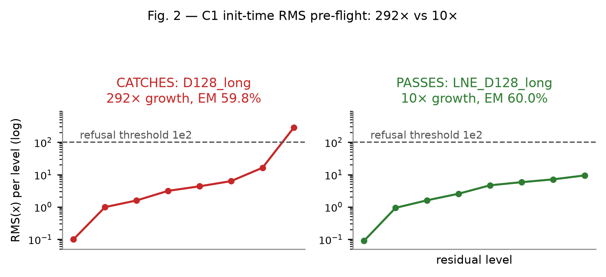
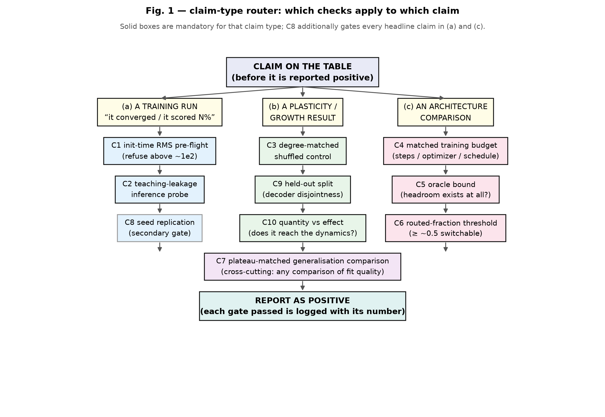
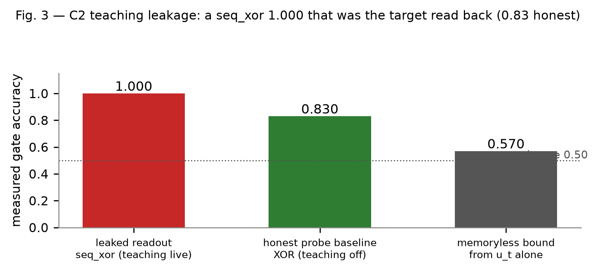
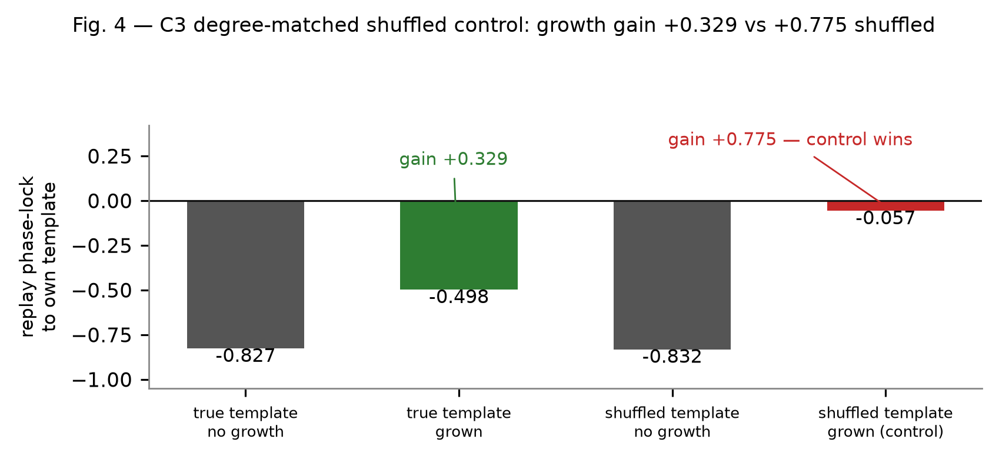
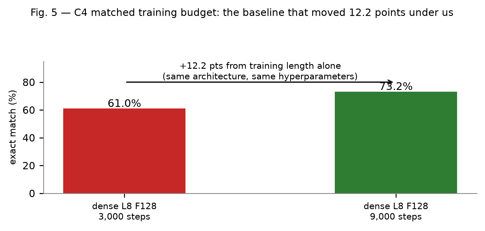
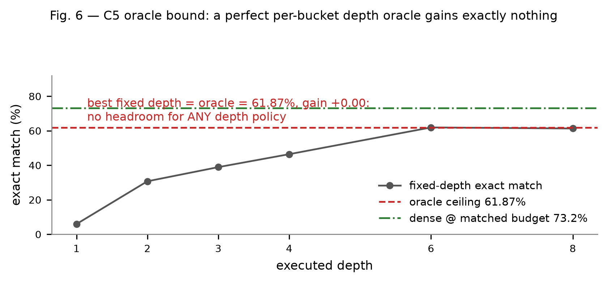
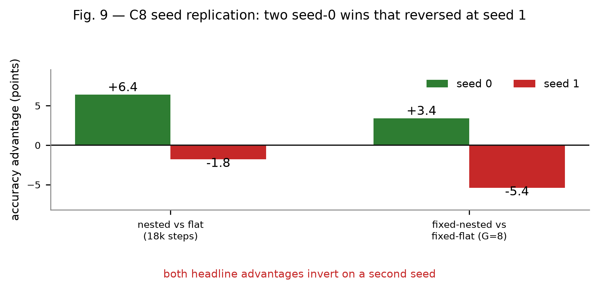
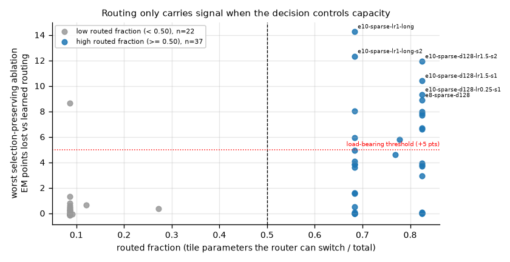
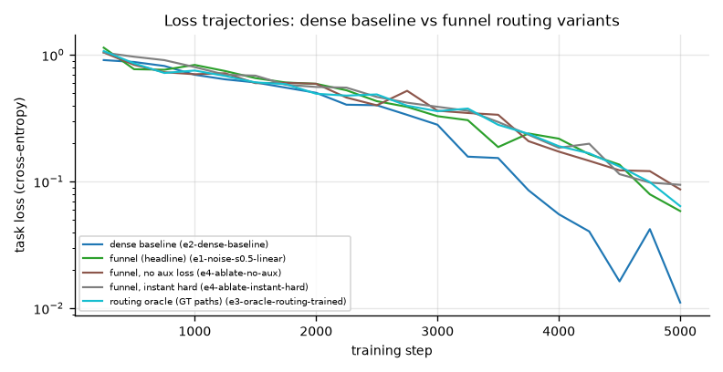
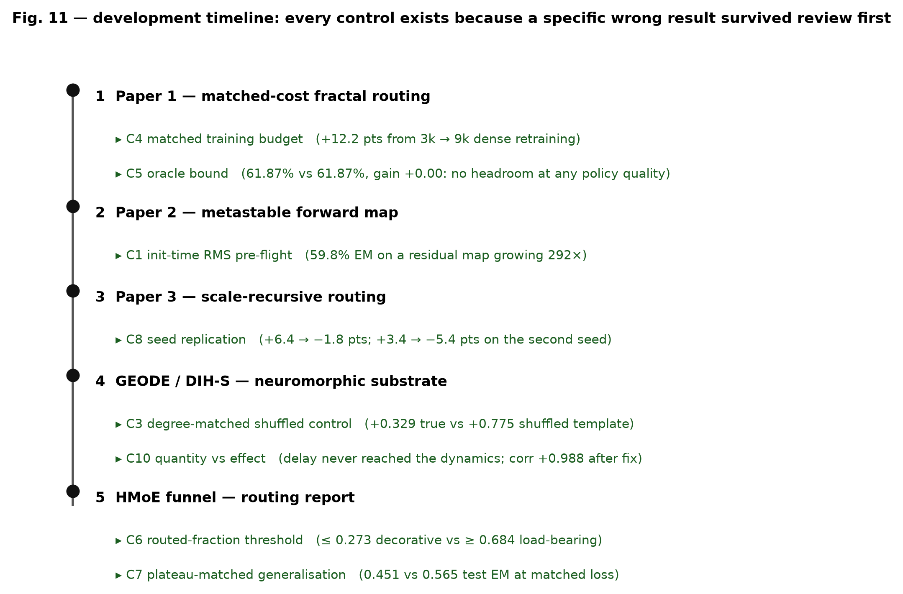

Six small-scale architecture projects, each producing at least one result that was plausible, internally consistent, reviewed by us — and wrong. None caught by a reviewer or a loss curve. Every one caught by a control we then added and named.
Click any control for the full card — rule, error class, the real number it destroyed, and procedure.
| # | Control | Catches | Cost to run |
|---|---|---|---|
| C1 | Init-time RMS pre-flight | Silent forward-map divergence — a model scoring 59.8% with a 292× residual growth profile, dead at high routing temperature. | ~1 min · one forward pass, no optimizer step |
| C2 | Teaching-leakage default hypothesis | Supervision leaking into the eval channel. Default assumption: good accuracy is guilty until a teaching-off probe says otherwise. | One inference probe with washout period |
| C3 | Degree-matched shuffled control | Structure claims where the topology isn't load-bearing — shuffle the wiring, keep degrees, see what survives. | 1 retrain per headline claim |
| C4 | Matched training budget | +12.2 points of pure training length misread as an architecture win. | Free — it's arithmetic you skipped |
| C5 | Oracle bound as direction-killer | Adaptive-depth dreams where a perfect depth oracle gains +0.00 points. The gap doesn't exist; stop building for it. | One analysis script |
| C6 | Routed-fraction threshold | "MoE wins" claims where routing touched a fraction of items too small to matter. | Logging you should already have |
| C7 | Plateau-matched generalisation | Comparisons made on the training slope instead of both curves' plateaus. | Run to plateau — then compare |
| C8 | Seed replication | The single lucky seed. Applies to every headline claim, no exceptions. | 3–5 seeds; embarrassingly parallel |
Rule: log per-level RMS(x) at random init with no optimizer step; refuse any config whose final-level RMS exceeds ~10² before spending a training step on it.
What it caught: D128_long reached 59.8% exact match on character arithmetic with a converging loss curve — while its residual stream grew 292× from level 1 to 7. The mechanism: routed experts read the raw residual; SwiGLU responds as ‖x‖², so each update scales with the state it's added to. fp32 doesn't rescue it. Cause was one missing LayerNorm.
The lesson: a model reaching high accuracy is not evidence that its forward map is bounded. The fix moved headline accuracy +0.2 points and eliminated every NaN (10.34% of logged steps → 0/234) — real, fully explained, orthogonal to the metric.
Rule: whenever accuracy looks good, the default hypothesis is that a path still exists by which the training signal reaches the measured variable. No number counts until a teaching-off inference probe (washout + late-trial scoring window) has run.
What it caught: in DIH-S, five separate leaks and one representability failure all produced accuracy that was real arithmetic on real measurements — and meaningless as evidence. Removing one leak created another; the decoder target wasn't even representable, so the metric measured an initialisation constant.
Corollary: an unmeasured claim is not a low-scoring claim. Absent evidence must never be silently converted into a weak positive or negative.
Rule: before crediting architecture, shuffle the topology while matching node degrees. If performance survives the shuffle, your structure story is about degree statistics, not your design.
What it caught: GEODE/DIH-S connectivity claims that survived every ablation except this one — shuffled graphs with matched degree distributions performed equivalently, killing "the wiring matters" conclusions that had already been drafted.
Rule: no comparison ships unless both sides trained for the number of steps named in the caption, one shared optimizer and schedule.
What it caught: Paper 1 measured +12.2 points of exact match from training length alone — enough to manufacture or destroy any architecture effect at this scale. Several early "dense wins" were too generous to us; the fix rewrote the results table.
Rule: before building adaptive behaviour, compute the oracle bound: the best possible per-item decision given your own measured curves. If the oracle's gain is ~0, no learned policy can find what isn't there.
What it caught: the entire adaptive-depth program. The oracle's maximum attainable accuracy equalled the best fixed depth to two decimal places (61.87% vs 61.87%, +0.00 points) — and extra depth actively hurt. The routing machinery was healthy; routing simply wasn't where the compute is.
Rule: report the fraction of items where routing actually changed execution. Below threshold, "MoE wins" claims describe a rounding error, not an architecture.
What it caught: HMoE funnel-routing improvements that turned out to ride on routed fractions too small for any mechanism to exploit at scale.
Rule: compare generalisation at both curves' plateaus, never mid-slope. Slope comparisons reward faster overfitting.
What it caught: HMoE comparisons that flipped sign once both models plateaued — the "loser" was simply slower to converge, not worse.
Rule: every headline claim replicates across 3–5 seeds; report the spread, not the best run.
What it caught: Paper 3's seed-to-seed variance was large enough to flip conclusions — several single-seed effects were luck of initialisation. Replication is embarrassingly parallel and always has been.
Plus two secondary controls (in-sample vs held-out splits; testing effects not quantities). Full protocol, procedures and rejection thresholds in the paper — figures below are from it.
Paper 2's finding — a superlinear sublayer reading an un-normalised residual diverges at finite depth, RMS(x₍ₗ₊₁₎) ≈ RMS(xₗ)·(1 + c·RMS(xₗ)) — was established through this discipline and then held:
The fix made an entire architecture trainable for the first time: weight tying at 490K params went from dead at step 400 to 48.4% exact — while moving headline accuracy only +0.2 points. A bug can be real, fully explained, and orthogonal to your headline metric simultaneously.










Every number in these papers is quoted verbatim from a named artifact in one of the six source projects. Reproducible harness included: training pipelines, benchmark scripts, ablation framework and provenance audits.
The protocol paper: eight primary controls + two secondary, each with its case study, procedure and measured cost. 25 pp · 1.6 MB
⬇ PDFMatched-cost study of fractal/recursive routing at ≤10M params. Dense dominates 5 of 5; oracle headroom +0.00 pts. 56 KB
⬇ PDFHigh accuracy with a diverging forward map: one missing LayerNorm, causality established five ways, init-time pre-flight test. 112 KB
⬇ PDFRecursion across scales, degree-matched controls and seed replication across the outer and inner axes. 284 KB
⬇ PDFThe neuromorphic substrate with its v3.0 math audit and experiment ledger — five leaks and a representability failure, all named. 180 KB
⬇ PDFMixture-of-experts funnel routing with plateau-matched generalisation and routed-fraction thresholds. 913 KB
⬇ PDFCorrespondence and questions about any paper — ask on LinkedIn ↗